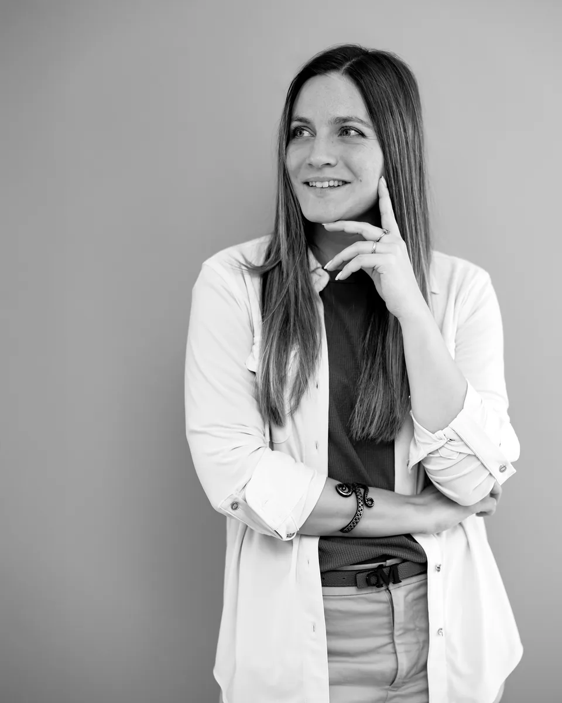
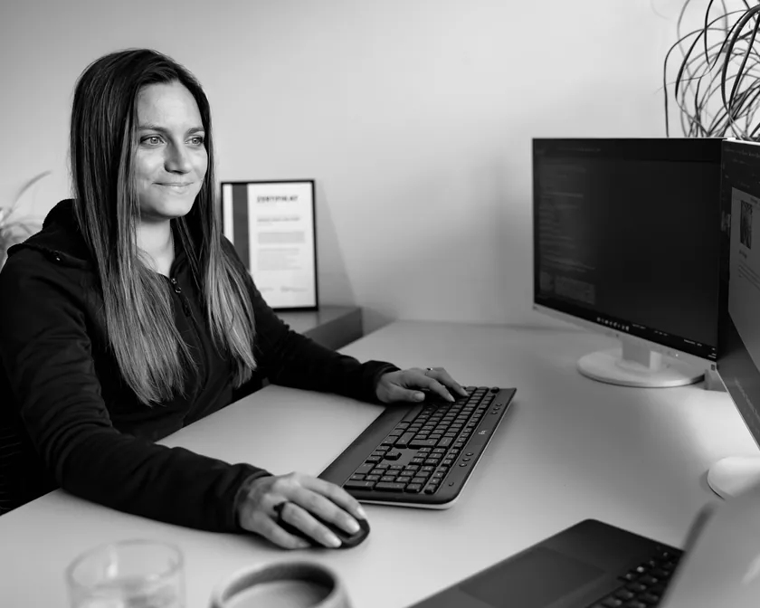

Vertrauen.
Ehrlich miteinander umgehen. Sich aufeinander verlassen können. Und auch mal sagen dürfen, wenn man etwas nicht weiss.
The Human Behind Mosko.
Hi, ich bin Cheyenne.
Gelernte Informatikerin, zertifizierte Neurowebdesignerin und Gründerin von MOSKO.
Ein Mensch mit ziemlich vielen Interessen, eigenen Vorstellungen und der Angewohnheit, mir immer wieder etwas Neues beizubringen.

Not Quite as Planned.
habe ich meine Lehre in der Informatik begonnen. Schon damals hatte ich viel Freiraum, mich mit den Dingen zu beschäftigen, die mich interessierten, auszuprobieren und eigene Lösungen zu finden.
Ich habe gelernt, mir Wissen selbst anzueignen. Und vor allem habe ich gelernt, was es bedeutet, Dienstleisterin zu sein.
Nach einigen Jahren im Beruf hatte ich zunehmend eigene Vorstellungen davon, wie ich arbeiten und mich weiterentwickeln wollte.
habe ich den Schritt in die Selbstständigkeit gewagt.

Ich wollte nicht unbedingt etwas anderes machen. Ich wollte es auf meine Art machen.
One Thing Led to Another.
Nein. Zumindest war das anfangs meine Antwort.
Als selbstständige Informatikerin wurde ich erstaunlich oft darauf angesprochen. Irgendwann dachte ich mir: Warum eigentlich nicht?
Angefangen hat es mit meiner eigenen Website, unzähligen YouTube-Tutorials und einer grossen Portion Neugier.
Mit den ersten Kundenprojekten wuchs auch mein Interesse daran, weshalb manche Gestaltungen besser funktionieren als andere. Ich beschäftigte mich intensiver mit Marketing, menschlicher Wahrnehmung und der Psychologie hinter Designentscheidungen.
Neurowebexperts-Badge · Platzhalter
Heute sind Webdesign und IT zwei feste Bestandteile meiner Arbeit.
Und zum Glück muss ich mich nicht zwischen ihnen entscheiden.
Becoming Mosko.
Wer mich schon etwas länger kennt, kennt mich vielleicht noch unter dem Namen Mosggo.
Warum zwei G? Weil ich es damals witzig fand.
Einen tieferen Grund gab es tatsächlich nicht. =)
Seitdem habe ich einiges über Gestaltung, Marketing und die Bedeutung einer eigenen Identität gelernt.
MOSKO. ist für mich deshalb weniger ein Rebranding als vielmehr die Entstehung meiner ersten richtigen Marke.
Eine Marke, die nicht einfach meinen Geschmack widerspiegelt, sondern meine Haltung, meine Arbeit und das, was mir dabei wichtig ist.
Digital on Point.
What Matters.
Ehrlich miteinander umgehen. Sich aufeinander verlassen können. Und auch mal sagen dürfen, wenn man etwas nicht weiss.
Wir müssen nicht immer derselben Meinung sein. Aber wir können versuchen, die Dinge auch mal aus der Perspektive unseres Gegenübers zu sehen.
Neugierig bleiben. Die eigenen Überzeugungen hinterfragen. Und sich die Freiheit nehmen, Dinge morgen anders zu sehen als heute.
My Definition of Success.
Erfolg ist für mich, wenn man am Freitag nicht die Minuten zählt bis zum Wochenende und keinen Sonntagsblues hat, weil man montags wieder arbeiten muss.
Offline.
Wenn ich nicht gerade vor einem Bildschirm sitze, zieht es mich gerne mal unter die Wasseroberfläche. Vorzugsweise irgendwo, wo das Wasser etwas wärmer ist als bei uns.
Ich habe ein Faible für schnelle Autos, ein grosses Herz für Tiere und bin wohl für immer ein bisschen Pferdemädchen.
Und ja, ich trinke tatsächlich lieber Schoggimilch als Kaffee.